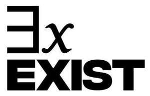

Trade Mark Journal No.2025/017 25 April 2025
UK00004185523 7 April 2025 (3)

- Class 3
- Lip balm; lipstick; lip liner; lip gloss; lip mask; lip oil; lip stain; foundation; mascara; blusher; primer; concealer; bronzer; highlighter; eye make-up; eye shadow; eye pencils; eyeliners; face powder; facial creams; foundation make-up; make-up; mascara; moisturizers; paint stripping preparations; perfume; perfumed powders; self-adhesive false eyebrows; adhesive removers; artificial fingernails; nail base coat [cosmetics]; nail buffing preparations; nail care preparations; nail polish; nail-polish removers; skin, eye and nail care preparations; temporary tattoo transfers for use as cosmetics; hair dye; hair dyeing preparations; hair colouring and dyes; beard dyes; bleaching preparations for cosmetic purposes; bleaching preparations for the hair; hair preparations and treatments; hair balm; hair bleach; hair bleaching preparations; hair butter; hair care creams; hair care preparations; hair cleaning preparations; hair colour removers; hair colouring; hair colouring preparations; hair conditioner; hair curling preparations; hair mascara; hair shampoos and conditioners; hair texturizers; hair tonic; hairspray; tints for the beard; cosmetic preparations; after sun creams; anti-aging cream; aromatherapy creams; aromatherapy lotions; aromatherapy oil; aromatic oils; bath cream; bath foam; bath oil; beauty balm creams; beauty care cosmetics; beauty creams; beauty care preparations; blusher; body art stickers; body cleaning and beauty care preparations; body cream; body deodorants [perfumery]; body glitters; body masks; body oil; body scrub; body sprays; breath fresheners; cleansing creams [cosmetic]; cologne; compacts containing make-up; cosmetic dyes; cosmetic hair care preparations; cosmetic hair dressing preparations; cosmetic oils; cosmetic pencils; cosmetic sun-protecting preparations; cosmetic sun-tanning preparations; cosmetics and cosmetic preparations; cotton for cosmetic purposes; curl defining preparations; decorative transfers for cosmetic purposes; deodorants and antiperspirants; detergents for automobiles; emery paper; exfoliant creams; fragrances; after-shave; after-shave balms; after-shave creams; after-shave emulsions; after-shave gel; air fragrance preparations; bleaching preparations for household use; bleaching preparations for laundry use; carpet shampoo; carpet cleaners; car shampoos; car polish; chrome polish; cleaning preparations; laundry preparations; shoe and boot cream; room fragrancing preparations; automobile cleaners; automobile polishes; automobile polish; automobile wax; fragrances for automobiles.
THEUNSEENEXISTS LIMITED
Representative: Sheridans Solicitors LLP